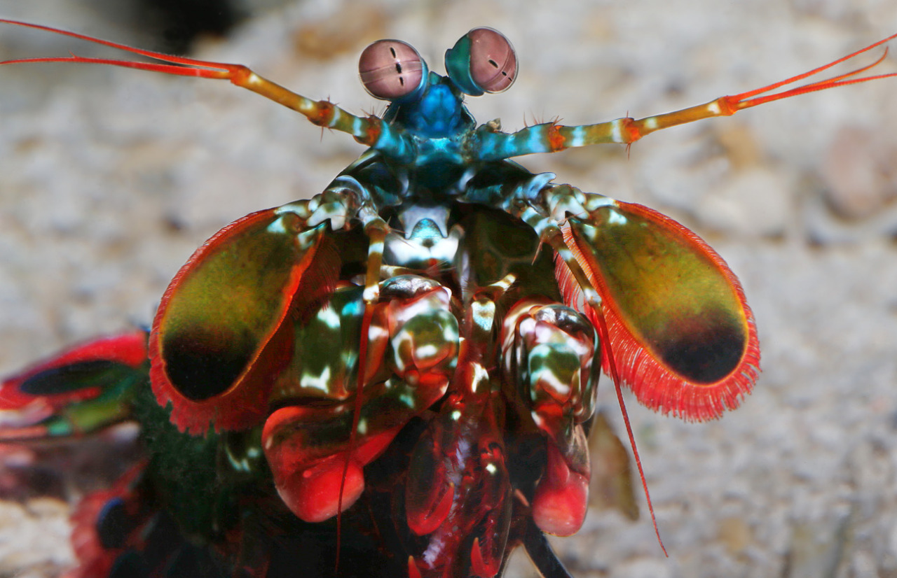
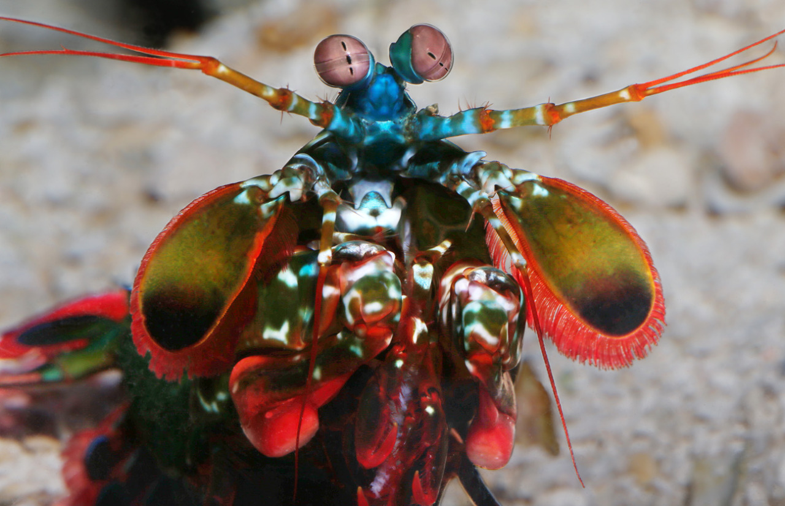

About
The peacock mantis shrimp (Odontodactylus scyllarus) is a member of the mantis shrimp family, named for its bright shell colors of green, blue, and orange. It is found throughout the Indo-Pacific, inhabiting sandy and rubble bottoms near coral reefs, where it builds burrows for shelter. Adults typically grow up to 18 cm (7 in) in length, making them one of the larger stomatopod (Other mantis shrimp) species.
Peacock mantis shrimps are “smashers,” equipped with club-like appendages capable of striking prey with incredible speed and force. Their strikes are so powerful that they can break open the shells of crabs, clams, and snails. When striking, the acceleration of the club/claw also produces bubbles that collapse with additional force, delivering a second impact strong enough to stun or kill prey.
Along with their formidable strength, peacock mantis shrimps are known for having one of the most advanced visual systems in the animal kingdom. Each eye is able to move independently and can detect polarized and ultraviolet light as well as a wide spectrum of colors thanks to up to 12 different types of photoreceptor cells. This remarkable vision helps them navigate complex reef environments and identify prey and rivals.
 
